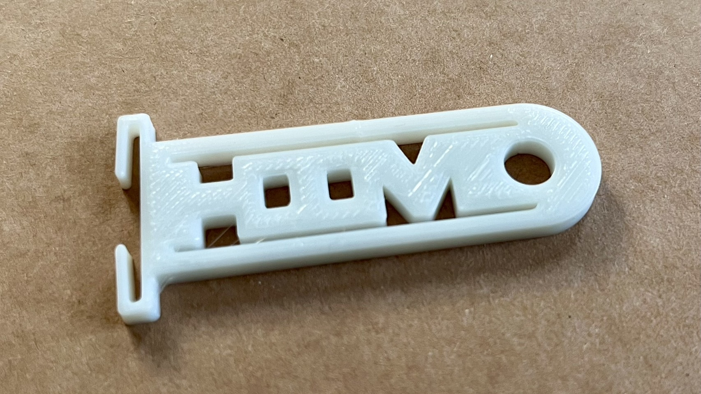
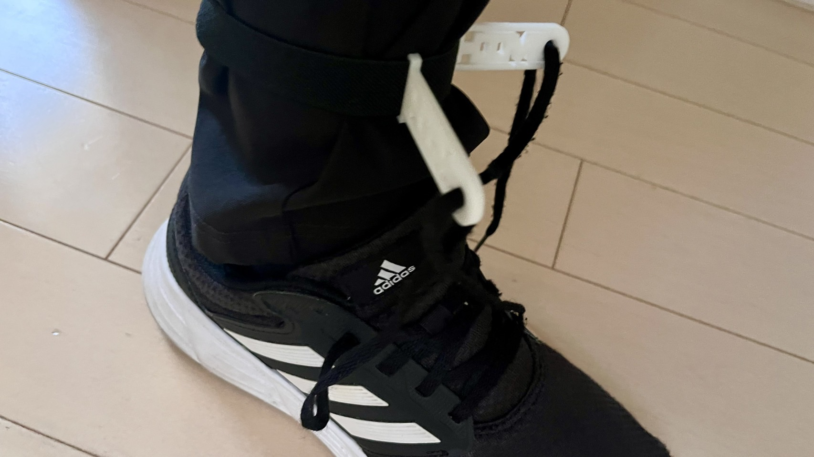
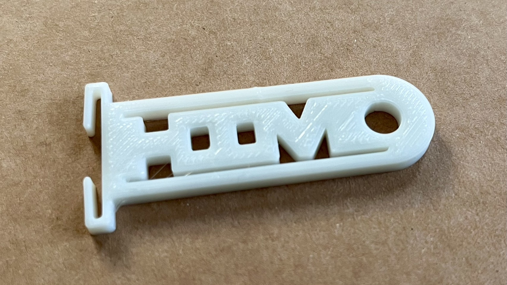
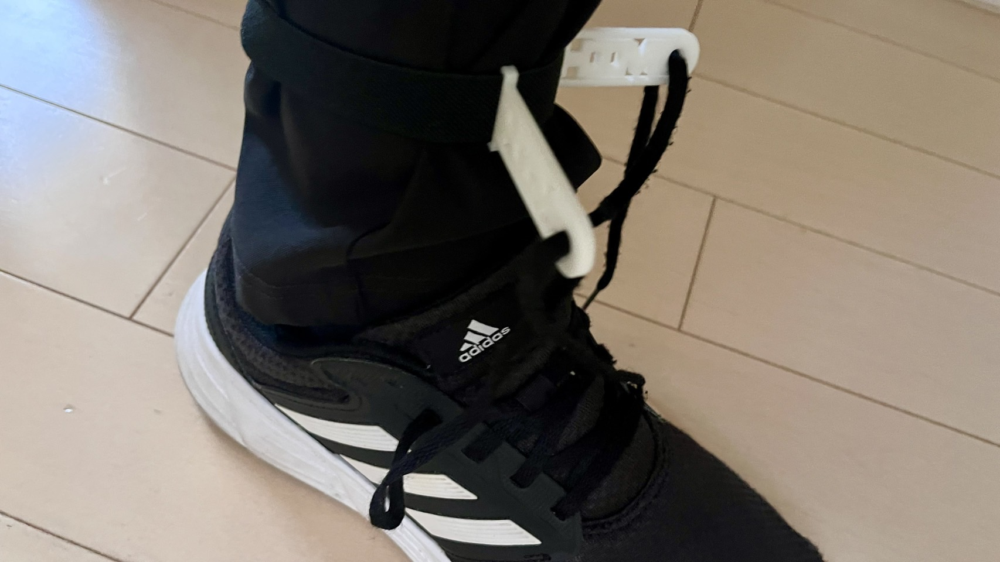

はじめに
グループで共有した"気になった人"の中に『靴ひもを何度も結びなおしていた人』がいました。
ひもを結ぶのが下手な私は、その人にどこか親近感を抱いたのです。
そこで、その人がほどけてしまった靴ひもを恥ずかしく邪魔なモノ として捉えていたという仮定を考察。
どうすれば靴ひもがほどけてもスマートに歩き続けることができるか を考え、それを実現できるアイテムを制作しました。
ひもを結ぶのが下手な私は、その人にどこか親近感を抱いたのです。
そこで、その人がほどけてしまった靴ひもを
どうすれば
制作＆完成品
靴ひもがほどけても心配いらないアイテムとはなにか...熟考した結果、ストッパーという案が浮かびました。
このスケッチをもとに、デザインをよりオシャレに磨き上げていきました。
 そうして試作を数回行い、完成したのがこちらの『
そうして試作を数回行い、完成したのがこちらの『ひもストッパー 』になります！


靴ひもがほどけてしまっても、結びなおさなくても大丈夫！
この『ひもストッパー』をゴムベルトを使い足首に巻いて靴ひもを穴に通せば、結びなおすために何度も立ち止まる必要はないのです。
スマートに目的地まで向かうことができます。次のトレンド間違いなし。
このスケッチをもとに、デザインをよりオシャレに磨き上げていきました。
そうして試作を数回行い、完成したのがこちらの『

靴ひもがほどけてしまっても、結びなおさなくても大丈夫！
この『ひもストッパー』をゴムベルトを使い足首に巻いて靴ひもを穴に通せば、結びなおすために何度も立ち止まる必要はないのです。
スマートに目的地まで向かうことができます。次のトレンド間違いなし。
ちなみに、ストッパー本体には「HIMO」という文字が象られています。かわいい（自画自賛）
穴をあけることでプリント時間の削減にもつながっています。
穴をあけることでプリント時間の削減にもつながっています。
まとめ＆データ
今回は「誰かのためのデザイン」というテーマに、最初はやや苦戦しました。
ですが、先生からのアドバイスをもとに、視野を広げてみると、色々なことが思い浮かんだのです。
例えば「"その人"を○○するには...」という視点だけでなく「世界の常識を○○するには...」という感じで、ある一点にこだわりすぎないのが大事です。
みなさんもアイデアを考えるまでのプロセスで、視野を広げることを 意識してみてください！
stlデータ▶ひもストッパー（stl）
使用したベルト▶ダイソー べんりベルト（４本）
ですが、先生からのアドバイスをもとに、視野を広げてみると、色々なことが思い浮かんだのです。
例えば「"その人"を○○するには...」という視点だけでなく「世界の常識を○○するには...」という感じで、ある一点にこだわりすぎないのが大事です。
みなさんもアイデアを考えるまでのプロセスで、
stlデータ▶ひもストッパー（stl）
使用したベルト▶ダイソー べんりベルト（４本）